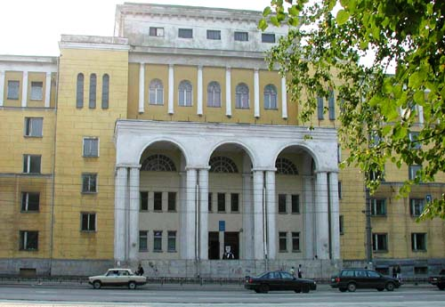

|
4 апреля 2005 г. исполняется 85 лет со дня основания Смоленской государственной медицинской академии. История академии начинается с 1920 г., когда был открыт медицинский факультет при Смоленском государственном университете. Все кафедры нового факультета создавались заново. Новому факультету предстояло провести в жизнь реформу медицинского образования, направленную «на подготовку врача с серьезными естественно-научными знаниями...». Несмотря на трудности того времени, медфак успешно справлялся как с учебной и научной, так и с лечебной работой. Уже в 1925 г. на медицинском факультете работало 29 профессоров, многие из которых были воспитанниками известнейших отечественных медицинских школ: С.П. Боткина, М.В. Яновского, В.М. Бехтерева, Г.Н. Габричевского, С.И. Спасокукоцкого и др. Уже в то время активно велась научно-исследовательская работа. За факультетский период научные сотрудники внесли значительный вклад в разработку многих актуальных вопросов медицины. Причём, создание ряда направлений велось на материалах Смоленской губернии и, таким образом, помогло местным органам здравоохранения правильно планировать и реализовывать меры профилактики и борьбы с заболеваниями. Следуя принципам отечественной клинической медицины, первые профессора медицинского факультета Смоленского университета стали основоположниками клинического преподавания в Смоленске. Уже в 1925 г. медицинский факультет обслуживали институты (анатомический, бактериологический, гигиенический), лаборатории (неорганической и органической химии, физиологической химии, физиологии) и несколько клиник.
18 апреля 1930 г. приказом Народного Комиссариата по просвещению N 231, в соответствии с решением СНК СССР, медицинский факультет при университете был преобразован в самостоятельное высшее учебное заведение - Смоленский государственный медицинский институт.
До 1931 г. медицинский институт имел в своём составе всего лишь один лечебно-профилактический факультет с двумя отделениями (дневным и вечерним). К 1933 г. были организованы два новых факультета: санитарно-профилактический с эпидемиологическим отделением и факультет охраны материнства и младенчества с двумя отделениями: педиатрическим и акушерско-гинекологическим.
За три года существования институт значительно увеличил контингент студенчества. Однако добиться действительного повышения качества подготовки врачей, отвечающих высоким требованиям, было возможно только при создании соответствующей материальной базы, необходимой как для учебного процесса, так для лечебной и научной деятельности. В 1935 г. медико-техническим советом Наркомздрава РСФСР был утверждён генеральный план капитального строительства, согласно которому в том же году начато строительство большого учебного студенческого общежития, физико-химического корпуса, жилых корпусов для преподавателей и т.д. Прекрасными базами института стали новые клиники.
Кроме педагогической, лечебной и научно-исследовательской деятельности, учёные института совместно со всем коллективом проводили большую работу по оказанию помощи органам здравоохранения. Регулярные выезды научных сотрудников в районные центры области для консультаций сложных и тяжёлых больных, проведение семинаров и конференций, лекций и бесед, как для медицинских работников, так и для населения способствовали улучшению медицинского обслуживания на периферии.
Уже с самого начала Великой Отечественной Войны профессорско-преподавательский состав, студенты, рабочие и служащие института встали в ряды защитников Смоленска: охраняли здание института от налётов вражеской авиации, строили оборонительные сооружения на подступах к городу. Институт продолжал функционировать в условиях прифронтовой обстановки. Многие профессора круглосуточно работали в больницах, превратившихся в госпитали по оказанию помощи раненым. Особенно разрушительным был налёт вражеской авиации 28 июня 1941 г., а через день, 30 июня, состоялся последний предвоенный выпуск врачей.
Война временно прервала деятельность Смоленского медицинского института, сотрудникам которого с большим трудом удалось в июле 1941 г. эвакуировать часть ценного имущества в г. Саратов. Многие профессора, в том числе и директор института, преподаватели, доценты и ассистенты ушли на фронт.
Смоленская область была освобождена 25 сентября 1943 г. Было разрушено 94% промышленных, культурных и бытовых объектов. Очень сильно пострадал и медицинский институт. Учебные корпуса института (за исключением главного здания) и общежития были полностью сожжены или разрушены, не оставалось ни учебного, ни научного оборудования, не было библиотеки. Сгорело большинство лечебных учреждений города, являющихся клиническими базами института. Всё надо было создавать заново.
29 октября 1943 г. было принято постановление ЦК ВКП(б) и СНК СССР «О первоочередных мероприятиях по восстановлению хозяйства г. Смоленска».
Главным вопросом на повестке дня была проблема кадрового состава и, в первую очередь, вопрос о возвращении научных сотрудников в институт из советского тыла и действующей армии. В короткое время возвратился почти весь профессорско-преподавательский состав.
В октябре 1944 г. начались занятия на всех курсах института. Работать приходилось в неотапливаемых помещениях. В июле 1945 г. состоялся первый послевоенный выпуск врачей в количестве 61 человека.
Это было второе рождение института. Вся тяжесть огромной работы по восстановлению Смоленского медицинского института легла на плечи коллектива, основную часть которого составляли профессора, преподаватели, сотрудники, вернувшиеся с фронта. За их плечами была война, большой опыт организаторской работы, они умели подбирать кадры и организовывать коллектив для решения поставленных задач.
Благодаря росту государственных ассигнований уже к 1952 г. институт значительно пополнился специальным оборудованием, вырос уровень учебно-методической, лечебной и научно-исследовательской работы.
В 1956 г. Смоленский мединститут получил право принимать к защите кандидатские диссертации, что значительно подняло его авторитет и стимулировало преподавателей к завершению диссертационных работ.
Свой 40-летний юбилей коллектив института встречал уже в расцвете творческих сил и успехов. В этом же году был открыт вечерний факультет.
В целях улучшения стоматологической помощи населению в 1963 г. Министерство здравоохранения РСФСР разрешило Смоленскому мединституту в 1963 г. открыть стоматологический факультет с приёмом на 1 курс 100 человек.
В 1966 г. открылся педиатрический факультет с приёмом на первый курс 150 студентов, в 1976 г. - создано подготовительное отделение, в 1984 г. - факультет усовершенствования врачей, в 1994 г. - факультет иностранных учащихся; были созданы новые кафедры: клинической фармакологии, иммунологии и аллергологии, анестезиологии и реаниматологии, русского языка. Число обучающихся студентов составило 3500.
В 1993 г. институт успешно прошёл первую государственную аттестацию, заняв по её итогам третье место среди медицинских высших учебных заведений России. Решением комитета по высшему образованию от 15 июня 1994 г. Смоленский государственный медицинский институт был переименован в Смоленскую государственную медицинскую академию.
В настоящее время Смоленская государственная медицинская академия является крупным центром подготовки врачебных кадров, лечебно-профилактической и научной деятельности. Академия имеет в своем составе 8 факультетов: лечебный, педиатрический, стоматологический, факультет иностранных учащихся, довузовской подготовки, фармации, сестринского дела, повышения квалификации и переподготовки специалистов. В академии работают более 450 преподавателей, в том числе 77 докторов наук. Преподавание ведётся на теоретических и клинических базах, хорошо оборудованных техническими средствами обучения, лечебным и диагностическим оборудованием, что позволяет выпускникам овладевать передовыми медицинскими технологиями. Ежегодно академия выпускает более 400 врачей, а за все годы её существования было проучено более 30000 врачей. Большинство из них стали грамотными специалистами, крупными учёными, заслуженными деятелями науки, талантливыми руководителями и организаторами здравоохранения.
Ректоры СГМА
Федор Степанович Быков
(ректор СГМИ) | Доцент | 1930-1937 |
Батанов Василий Абрамович
(ректор СГМИ) | Доцент | 1937-1941,
1943-1950 |
| Григорий Михайлович Стариков (ректор СГМИ) | Профессор | 1950-1978 |
Козлов Николай Борисович
(ректор СГМИ, с 1994 - СГМА) | Заслуженный деятель науки, доктор медицинских наук, профессор | 1978-1995 |
Плешков Владимир Григорьевич
(ректор СГМА) | Академик РАЕН, доктор медицинских наук, профессор | 1995 - настоящее время |

Главный учебный корпус СГМА
41528
Смоленская государственная медицинская академия, СГМА |


")